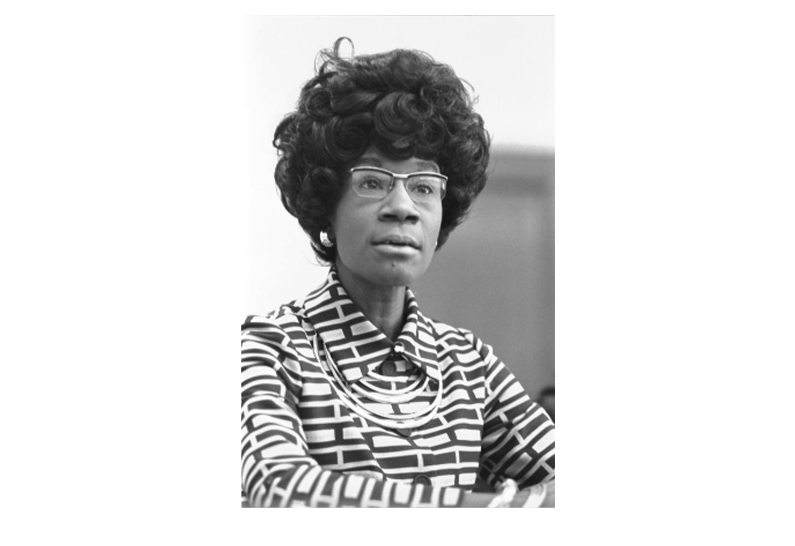

This photograph captures Congresswoman Shirley Chisholm during her historic announcement of her candidacy for the Democratic presidential nomination. In 1972, Chisholm became the first Black woman to seek a major party's nomination for President of the United States, marking a significant milestone in American political history. She was also the first woman overall to seek nomination from the Democractic Convention. Prior to this campaign, Shirley Chrisholm had become the first Black woman to be elected to Congress in 1968.
View the original item: Library of Congress Digital Collections